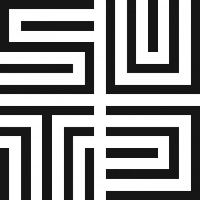

Runs 30 replications of Scenario A (nurses only) and 30 replications of Scenario B (nurses + robots), then compares each KPI using Welch's t-test.
Welch's t-test (unequal variances) · α = 0.05 · n = 30 per scenario · Stars: *** p<0.001 · ** p<0.01 · * p<0.05 · † p<0.10 · ns = not significant · Δ = B − A (negative = B improved)